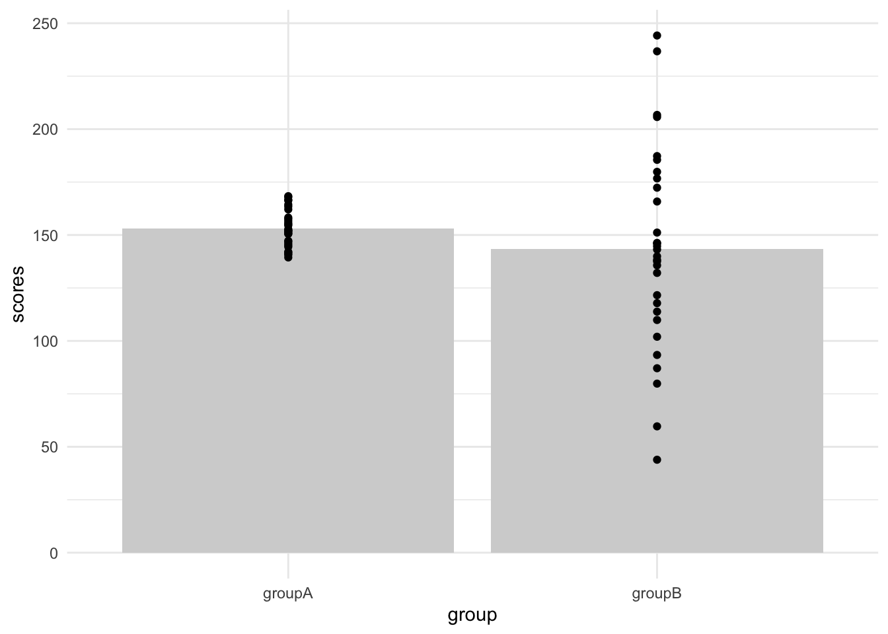
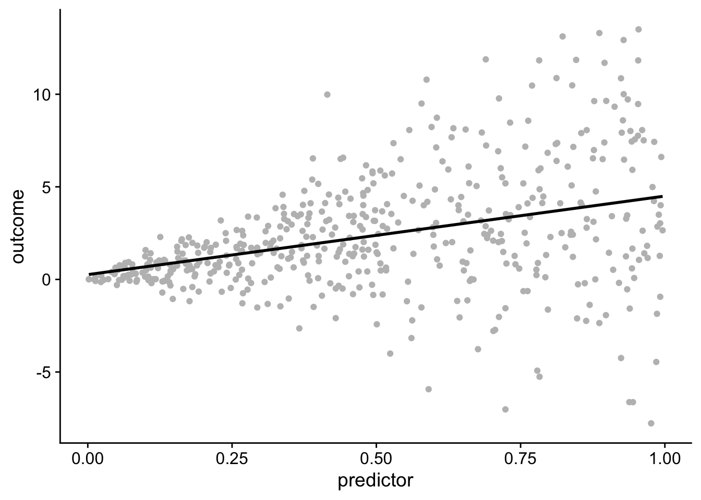

Regression model diagnostics
This walkthrough assumes that you have the following loaded in:
Testing the residuals
An important assumption test for our model is that the residuals are normally distributed. In fact some argue that this is more important than than having normal distributions in the raw data itself. Quickly, we can test this using the regular methods from the normal distribution walkthrough (see earlier this week).
Assuming we have loaded in our data and created our model:
# load in data
stress_data <- read_table("https://www.uvm.edu/~statdhtx/methods8/DataFiles/Tab9-2.dat")
── Column specification ────────────────────────────────────────────────────────
cols(
ID = col_double(),
Stress = col_double(),
Symptoms = col_double(),
lnSymptoms = col_double()
)Question 9: Run a Shapiro-Wilkes test (see earlier walkthrough) on our stress_symptoms_model residuals. How do we feel about the residuals here?
Diagnostic plots - base method
We can also submit the stress_symptoms_model to a battery of diagnostic plots. See the Flora Chapter 1 section on Basic Regression Diagnostic Concepts for an ex-plainer on each of these plots.
produces a host of successive plots, including a plot of “Residuals v. Fitted”, A Q-Q plot that includes possible outliers, and a leverage plot.
Diagnostic plots - ggplot method (ggfortify)
The above function produces the plots in succession using base R graphics. There is a ggplot based alternative that uses the ggfortify package, that produces all 4 diagnostic plots in a single figure. See this link for more details.
Diagnostic plots - performance method
We can get a similar battery of diagnostics using the performance library. We can just submit our model to performance::check_model. The nice thing about this method is the plot reminds you of what to look for. Because this function generates so many plots, it may be useful to execute this in your Console (as well as your qmd) to see the individual plots better.
Testing Heteroscedasticity
The assumption of Heteroscedasticity and the assumption of homogeneity of variance are one in the same. We typically refer to homogeneity of variance when we have categorical predictors. For example, next week this will involve comparing the variance of scores (their spread) in Group A against Group B.
two_groups <- tibble(groupA = rnorm(n = 30,mean = 150,sd = 10),
groupB = rnorm(n = 30, mean = 150, sd = 45)) %>%
pivot_longer(cols = c("groupA", "groupB"), names_to = "group",values_to = "scores")
ggplot(two_groups, aes(x=group, y=scores)) +
stat_summary(fun = "mean", size=1, fill="lightgray", geom = "bar") +
geom_point() +
theme_minimal()Warning: Using `size` aesthetic for lines was deprecated in ggplot2 3.4.0.
ℹ Please use `linewidth` instead.
In this case, it’s apparent that the spread of scores for groupB is wider than groupA. Note that for categorical predictors we can test this using the car::leveneTest (we’ll revisit next week)
Warning in leveneTest.default(y = y, group = group, ...): group coerced to
factor.Levene's Test for Homogeneity of Variance (center = median)
Df F value Pr(>F)
group 1 26.002 3.919e-06 ***
58
---
Signif. codes: 0 '***' 0.001 '**' 0.01 '*' 0.05 '.' 0.1 ' ' 1However, with continuous predictors our data doesn’t lump down neatly into groups. Consider this example:
set.seed(1)
heteroscedastic_data <- tibble(predictor = runif(500, 0, 1),
outcome = 5 * rnorm(500, predictor, predictor)
)
ggplot(heteroscedastic_data, aes(x=predictor, y=outcome)) +
geom_point(color="gray") +
geom_smooth(method=lm, level = 0.95, color="black", se = FALSE) +
theme_cowplot()`geom_smooth()` using formula = 'y ~ x'
We see here that the outcome becomes more variable as the predictor grows larger. This plot is demonstrating a violation of Heteroscedasticity The black line represents the line of best fit derived from running lm. Together, this highlights the central problem… in this case the error (residuals) increase as a function of the predictor. Among other things this would this may result in non-normal residuals.
A comprehensive visual inspection may be performed by calling the autoplot function on the linear model:
In this case, the important plots are the first three. If Heteroscedasticity were not present, plots (1) and (3) would have a flat horizontal red line indicating the average residuals of this regression. As the residuals are clumped in areas, we can say that Heteroscedasticity is evident in this data set. Plot (2), our qqplot, also is influenced by this Heteroscedasticity, as the distribution of errors is systematic rather than random (i.e., another confounding relationship is affecting error).
Several tests for Heteroscedasticity can be accessed from the olsrr package. For example, a simple test for Heteroscedasticity is the Breusch Pagan Test. Testing our stress_symptoms_model remember that the null hypothesis for this test is that the data is NOT heteroscedastic, therefore a p-value (here evaluated along the \(\chi^2\) distribution (Chi2) that is less than .05 means that the model has violated this assumption. In this case our stress_symptoms_model check out fine:
also installing the dependency 'goftest'
The downloaded binary packages are in
/var/folders/7k/6v7xmh35305_vjzy660s9_q40000gs/T//RtmpEbFMZZ/downloaded_packages
olsrr installed
Breusch Pagan Test for Heteroskedasticity
-----------------------------------------
Ho: the variance is constant
Ha: the variance is not constant
Data
--------------------------------------
Response : lnSymptoms
Variables: fitted values of lnSymptoms
Test Summary
----------------------------
DF = 1
Chi2 = 1.434746
Prob > Chi2 = 0.2309914 And now taking a look at our heteroscedastic_data, we see a violation.
heteroscedastic_data_model <- lm(outcome~predictor, heteroscedastic_data)
ols_test_breusch_pagan(heteroscedastic_data_model)
Breusch Pagan Test for Heteroskedasticity
-----------------------------------------
Ho: the variance is constant
Ha: the variance is not constant
Data
-----------------------------------
Response : outcome
Variables: fitted values of outcome
Test Summary
-------------------------------
DF = 1
Chi2 = 193.0889
Prob > Chi2 = 6.731713e-44